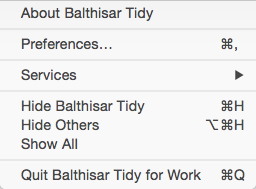

Balthisar Tidy for Work
Balthisar Tidy for Work uses standard Mac OS X menus that an experienced (or even novice!) user should find self-explanatory. The menu items’s descriptions below are limited to the features unique to Balthisar Tidy for Work.

The application menu is a completely standard Macintosh application menu.
Balthisar Tidy for Work also offers one or more System Services that can be accessed via the Services submenu, as shown here.

This menu with Balthisar Tidy for Work’s Services are available in other applications for use there. This lets you do things such as Tidy text using Balthisar Tidy for Work within, e.g., BBEdit without leaving BBEdit.